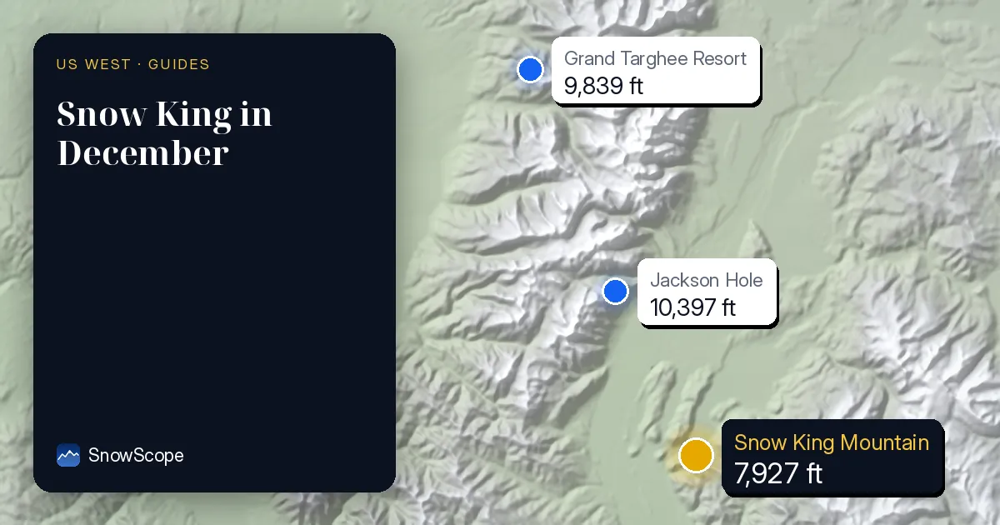

Snow King ف دجنبر: تزلج فحي Jackson بثمن كيبدا من 100 $
Jackson من بين المحطات غالية بزاف فالبلاد. Snow King هو الحل: جبل صغير قريب من المدينة، تقدر توصل ليه فالرجلين من الساحة، بتيكيات للكبار كتبدا من 100 $، والتلج ديال دجنبر حسب التاريخ ديالنا عادة كيكون موجود من نص الشهر.
شوف توقعات التلج مباشرة ديال Snow King Mountain فالتطبيق ديال SnowScopeالعلو ديال التلج، التنبيهات والخريطة 3D، فابور.
محطة تزلج فآخر الزنقة
Snow King طالع مباشرة فوق Jackson. حسب الخريطة ديالنا فيها 9 تيليسياج وتقريبا 11 mi (18 km) ديال البيستات، من حوالي 6,240 ft (1,902 m) حتا 7,930 ft (2,416 m). صغيرة وواعرة، وكتحس بيها بحال جبل ديال الناس ديال البلاصة فواد مشهور.

التلج ف دجنبر
التلج اللي كيبقى كيبدا فنص الجبل، تقريبا 7,080 ft (2,159 m)، فنص أكتوبر فشتا عادية حسب التاريخ ديالنا. ف 1 دجنبر العلو العادي تما هو 19 in (49 cm)؛ ف 15 دجنبر، 28 in (71 cm)؛ نهار Christmas، 34 in (86 cm). فالقمة كان 34 in (87 cm) ف 15 دجنبر عادي.
الفرص مزيانة: ف 15 دجنبر، 87% من الشتوات كان عندهم على الأقل 20 in (50 cm) فنص الجبل و98% فالقمة. دجنبر ضعيف (وحد من عشرة) كيبقى عندو 19 in (49 cm) فنص الجبل فهاد التاريخ. البلاصة الضعيفة هي القاعدة، ب21 in (54 cm) فشتا عادية.

الثمن، والفورفي
الموقع ديال Snow King كيبين التيكي ديال النهار للكبار (15-64 عام) كيبدا من 100 $. هاد الثمن هو 'كيبدا من'، فالأيام اللي فيهم الناس بزاف الثمن غادي يكون غالي شوية.
Snow King كاين ف Indy Pass حتا هو. الـ Indy Base Pass تمنو 419 $ للكبار، والـ Indy+ Pass، بلا أيام محظورة، 469 $؛ بجوج كيعطيو نهارين فكل محطة منخرطة.
جنب Grand Targhee و Jackson Hole
Grand Targhee، من الجيهة لور Teton Pass فجيهة Idaho، فيها تلج بزاف كتر: 46 in (118 cm) فنص الجبل ف 15 دجنبر عادي، وفكل وحدة من 46 شتا ديالنا كان عندها على الأقل 20 in فهاد التاريخ. التيكي ديال النهار أونلاين كيتراوح بين 125 $ و180 $ حسب النهار.
Jackson Hole، المحطة الكبيرة اللي فوق فالوادي، كان عندها 37 in (93 cm) فنص الجبل ف 15 دجنبر عادي حسب الأرقام ديالنا؛ ماقارناش الثمن ديالها. لنهار رخيص فالمدينة، Snow King هي الباب الأرخص باش تزلج ف Teton؛ ولنهار تلج مضمون، Targhee تستاهل الطريق.
من قبل ودابا
نص الجبل خسر شوية من التلج ديال بداية الموسم: 35 in (88 cm) ف 15 دجنبر عادي فأول 15 شتا من التاريخ ديالنا، مقابل 27 in (69 cm) فآخر 15، والنسبة اللي فوق 20 in هبطت من 100% ل80%. الشتا الماضية كان عندها 17 in (44 cm) فهاد التاريخ.
نصايح للي كيتزلجو
- بات ف Jackson ومشي للتيليسياج فالرجلين: غادي توفر على الباركينغ والتنقل.
- دوز نهار ف Snow King ونهار ف Targhee باش يكون عندك ويكاند طويل رخيص وفيه تلج كتر من سيمانة كاملة فالمحطة الكبيرة.
- Teton Pass واعر وكيسد ملي كاين العاصفة: تأكد من حالة الطريق قبل ما تمشي ل Targhee.
- Snow King موجهة للشمال فوق المدينة وواعرة: الصباحات المثلجة عادية فبداية الموسم.
المراجع والمصادر
- Snow King Mountain, winter day tickets (official store) store.snowkingmountain.com/en/catalogue/category/500-winter-lift-tickets/510-day-ticket_447/
- Indy Pass, shop 2026-27 (official) www.indyskipass.com/shop
- Grand Targhee, winter lift tickets 2026-27 (official) www.grandtarghee.com/tickets-passes/lift-tickets/winter-lift-tickets
- OpenSkiMap (mapped lifts and runs) openskimap.org/
- avalanche.org, US avalanche centers and forecasts avalanche.org/
على هاد الأرقام
أرقام التلج: التاريخ ديال التلج ديال SnowScope، 46 شتوة اللي فاتت (1980-81 حتى ل 2025-26) فالعلوات المكتوبة (التحت، الوسط، الفوق)، إعادة بناء ديال التلج اللي فات لمنطقة مصححة بالعلو (على أساس ERA5-Land؛ Snow_Hydro 1 كم للمغرب)، ماشي البلاغات ديال المحطة. التلج دابا: الخريطة ديال SnowScope. التيليسييجات والبيستات والعلوات: الخرايط ديال OpenSkiMap. الأثمنة: الصفحات الرسمية اللي لتحت، متشافة نهار 13 نونبر 2026؛ الأثمنة الدينامية كتبدل مع التاريخ والطلب.
النشرات الرسمية ديال الانهيارات: Bridger-Teton Avalanche Center
كيفاش تستاشهد بهاد المقال
للبحث، التعليم ولا الصحافة: الأرقام والرسومات تقدر تعاود تخدم بيهم بحرية تحت CC BY 4.0 مع هاد الاستشهاد.
SnowScope (2026), Snow King ف دجنبر: تزلج فحي Jackson بثمن كيبدا من 100 $, https://snowscope.app/blog/ar/2026/11/snow-king-jackson-december-budget-skiing.html, تشاف ف 2026-11-14
SnowScope (Atlas Labs). (2026, November 14). Snow King ف دجنبر: تزلج فحي Jackson بثمن كيبدا من 100 $. SnowScope snow reports. https://snowscope.app/blog/ar/2026/11/snow-king-jackson-december-budget-skiing.html
BibTeX
@misc{snowscope2026snowkingjacksondecemberb,
author = {{SnowScope (Atlas Labs)}},
title = {Snow King ف دجنبر: تزلج فحي Jackson بثمن كيبدا من 100 $},
year = {2026},
month = nov,
howpublished = {\url{https://snowscope.app/blog/ar/2026/11/snow-king-jackson-december-budget-skiing.html}},
note = {Published 2026-11-14 19:27 UTC; accessed 2026-11-14}
}· CC BY 4.0 · الطريقة، الداتا والأدوات →
Snow King Mountain: التلج والحرارة حسب العلو، هاد الشتا مقارنة مع اللي فاتت (الأدوات) →
تابع Snow King Mountain
فابور: ميساج ملي يجي التلج، والتوقعات كل صباح.